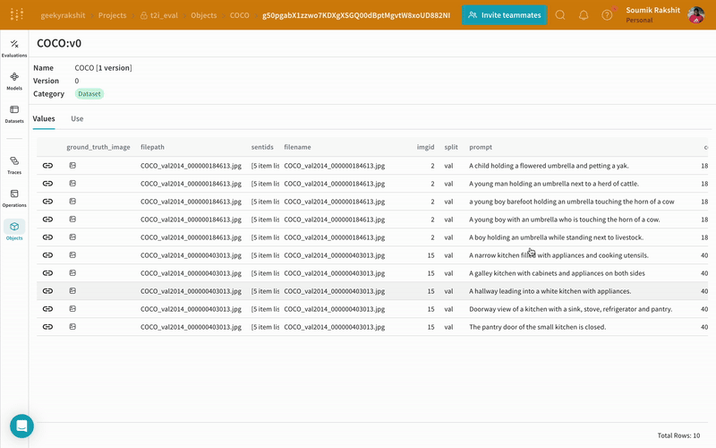
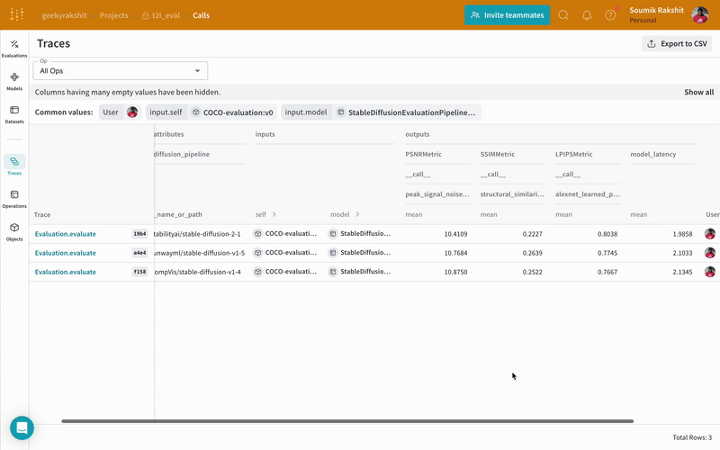

Hemm: Holistic Evaluation of Multi-modal Generative Models
Hemm is a library for performing comprehensive benchmark of text-to-image diffusion models on image quality and prompt comprehension integrated with Weights & Biases and Weave. Hemm is inspired by Holistic Evaluation of Text-To-Image Models.
Warning
The ownership of Hemm has been turned over to the Weights & Biases organization. All development will henceforth continue on https://github.com/wandb/Hemm and docs will be visible on https://wandb.github.io/Hemm/ and https://github.com/soumik12345/Hemm is hereby archived.
Installation
Quickstart
First let's publish a small subset of the MSCOCO validation set as a Weave Dataset.
import weave
from hemm.utils import publish_dataset_to_weave
weave.init(project_name="t2i_eval")
dataset_reference = publish_dataset_to_weave(
dataset_path="HuggingFaceM4/COCO",
prompt_column="sentences",
ground_truth_image_column="image",
split="validation",
dataset_transforms=[
lambda item: {**item, "sentences": item["sentences"]["raw"]}
],
data_limit=5,
)
|  |
|---|
| Weave Datasets enable you to collect examples for evaluation and automatically track versions for accurate comparisons. Easily update datasets with the UI and download the latest version locally with a simple API. |
{kind=link}
Next, you can evaluate Stable Diffusion 1.4 on image quality metrics as shown in the following code snippet:
import wandb
import weave
from hemm.eval_pipelines import BaseWeaveModel, EvaluationPipeline
from hemm.metrics.image_quality import LPIPSMetric, PSNRMetric, SSIMMetric
# Initialize Weave and WandB
wandb.init(project="image-quality-leaderboard", job_type="evaluation")
weave.init(project_name="image-quality-leaderboard")
# Initialize the diffusion model to be evaluated as a `weave.Model` using `BaseWeaveModel`
model = BaseWeaveModel(diffusion_model_name_or_path="CompVis/stable-diffusion-v1-4")
# Add the model to the evaluation pipeline
evaluation_pipeline = EvaluationPipeline(model=model)
# Add PSNR Metric to the evaluation pipeline
psnr_metric = PSNRMetric(image_size=evaluation_pipeline.image_size)
evaluation_pipeline.add_metric(psnr_metric)
# Add SSIM Metric to the evaluation pipeline
ssim_metric = SSIMMetric(image_size=evaluation_pipeline.image_size)
evaluation_pipeline.add_metric(ssim_metric)
# Add LPIPS Metric to the evaluation pipeline
lpips_metric = LPIPSMetric(image_size=evaluation_pipeline.image_size)
evaluation_pipeline.add_metric(lpips_metric)
# Evaluate!
evaluation_pipeline(dataset="COCO:v0")
|  |
|---|
| The evaluation pipeline will take each example, pass it through your application and score the output on multiple custom scoring functions using Weave Evaluation. By doing this, you'll have a view of the performance of your model, and a rich UI to drill into individual ouputs and scores. |
{kind=link}